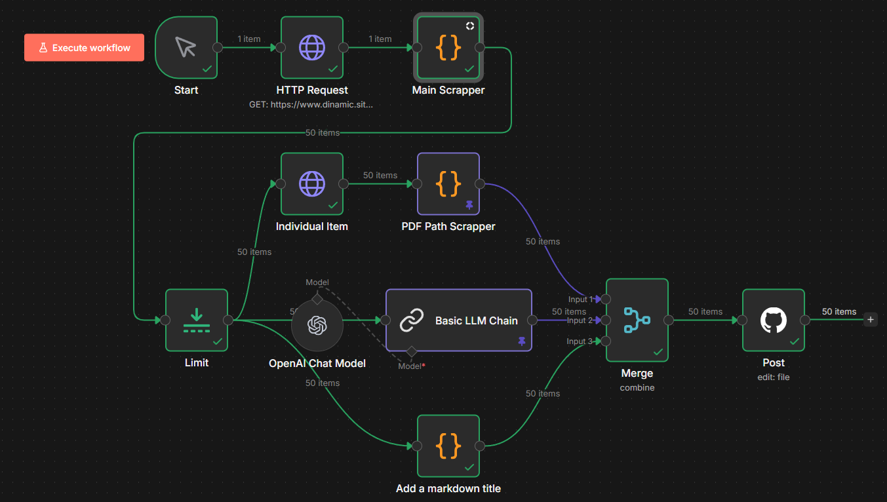
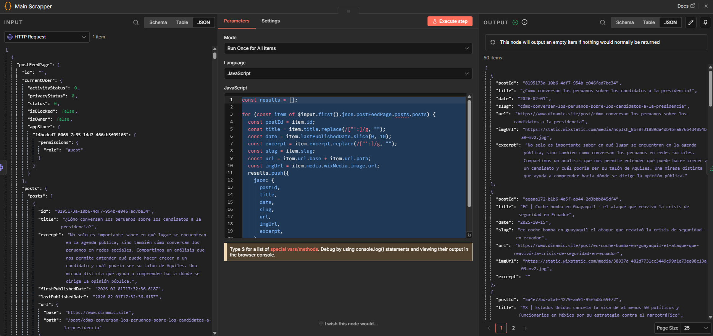

¿Cómo realizar un flujo de web scrapping en n8n?
El día de hoy veremos como se realiza web scrapping a un blog desde un flujo de n8n.
-
Seleccionar una url a Scrappear. En este caso tomaremos como ejemplo la siguiente: https://www.dinamic.site/investigacionespublicas. Podemos observar que dicho sitio web contiene una lista de posts sobre investigaciones públicas que el creador del sitio web (Dinamics) a realizado. Sin embargo es de notar que únicamente colocaron un título, foto, fecha y un documento PDF en cada post. Sin embargo dichos posts carecen de contenido textual, y el contenido es visible fácilmente. El objetivo será entonces, utilizar Web Scrapping para extraer el contenido de dichos artículos para mejorarlos a través de agregar una descripción y pasar los pdf a imagenes.
-
Crear una instancia de EC2. Procedemos a crear una instancia de n8n, la cual podemos utilizar en local o hacerlo mediante la nube. En mi caso utilizaré una instancia EC2 de AWS la cual me permite tener el flujo de trabajo de n8n corriendo diariamente en la nube para en automático, ejecutar un script casa cierto tiempo para extraer nuevos posts en caso de que se publiquen. Para lo cual después de haber creado una cuenta de AWS Cloud procedemos a crear una instancia de EC2 base linux.
-
Instalar Docker. Una vez tengamos nuestra distribuación de linux lista procedemos a ejecutar una serie de comandos en terminal para instalar Docker, Docker Compose y para descargar la imagen del contenedor de n8n disponible en Dockerhub.
-
Crear un flujo de n8n. Una vez listo el servidor de n8n, empezamos añadiendo un primer nodo para ejecutar el workflow al dar clic como trigger. Al final lucirá así: 
-
Nodo HTTP request. En la sección de nodos “core” podemos hallar un nodo para realizar una request HTTP. En la configuración seleccionamos la URL a Scrappear. El caso de Wix es muy especial ya que utiliza la tecnología Thunderbolt, por lo que en realidad la URL que trae la información es distinta. Para saber cual es tenemos que entrar a las herramientas de desarrollador. Buscando un poco la url usada fue: https://www.dinamic.site/_api/blog-frontend-adapter-public/v2/post-feed-page Como se puede apreciar en la imagen:

- Nodo Scrapper. El nodo más importante. Es un nodo de tipo “código”, que para este ejemplo se selecciono JavaScript como lenguaje ya que a diferencia de Python este no require la instalación de bibliotecas externas para realizar web scrapping (a diferencia de Python que requiere Beautiful Soup). Ya que JavaScript provee herramientas nativas para trabajar con documentos HTML. 
Este nodo es la parte dificil y su código variará dependiendo del sitio web a Scrappear. En este caso tenemos que trabajar sobre un documento HTML generado con Wix, el cual suele generar código bastante repetitivo y criptico. Recomiendo descargar el response del nodo anterior y abrirlo en un editor de texto, y buscar palabras claves de lo que lo queremos Scrappear.
Cómo ejemplo si queremos extraer el título empezamos por extraer la información manualmente de los primeros dos ejemplos:
- ¿Cómo conversan los peruanos sobre los candidatos a la presidencia?
-
EC Coche bomba en Guayaquil - el ataque que reavivó la crisis de seguridad en Ecuador
Posteriormente buscamos dichos titulos en la respuesta que obtuvimos (usando una herramienta de busqueda de un editor de texto). Una vez encontradas dichas instancias (que en este caso son muchas ya que Wix repite la información), tenemos dos opciones. Crear las cadenas de regex manualmente o copiar un fragmento de la respuesta y darsela a un LLM para que genere el codigo Regex que me de la información que necesito.
El código que se genero finalmente fue el siguiente:
const results = [];
for (const item of $input.first().json.postFeedPage.posts.posts) {
const postId = item.id;
const title = item.title.replace(/["':]/g, "");
const date = item.lastPublishedDate.slice(0, 10);
const excerpt = item.excerpt.replace(/["':]/g, "");
const slug = item.slug;
const url = item.url.base + item.url.path;
const imgUrl = item.media.wixMedia.image.url;
results.push({
json: {
postId,
title,
date,
slug,
url,
imgUrl,
excerpt,
}
});
}
return results;
- Resumir el texto con un nodo LLM.
Usamos un LLM conectado a ChatGpt con el siguiente prompt:
"Eres un escritor de un blog. Tu trabajo es el leer el titulo y la fecha de un post. Si conoces del tema escribes acerca de ello según tus conocimientos. Sino lo inventas. Debe de ser un resumen corto (4 párrafos) acerca de que podría tratar el post. Dicho resumen será publicado como el cuerpo del post. Así como no repitas el titulo ni la fecha, solo escribe el cuerpo del post. No cuentes en tu respuesta tu razonamiento. Tu respuesta debe ser el texto listo para publcarse, sin que el usurio se de cuenta de que fue generado con IA. El blog le pertenece a DINAMIC una empresa que detecta y analiza las conversaciones en redes sociales como ningún otro software. Su tecnología estudia con IA el contexto social, geográfico y discursivo. Para obtener datos que ayudan a la toma de desiciones. En caso de que $json.excerpt o $json.originalContent no sea vacíos, tu respuesta debe de empezar por incluir dicho texto, más algo más que tu escribas (generes)." - Publicar el contenido extraido en Jekyll. Finalmente se publico el contenido en un website de Jekyll, es decir este!